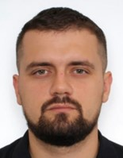

МАТЯШ
ІВАН
ЮРІЙОВИЧ
ДАТА НАРОДЖЕННЯ
01 БЕРЕЗНЯ 1992 РОКУ
СІМЕЙНИЙ СТАН
Одружений
ПРО СЕБЕ
Ініціативний,
швидко засвоюю нову інформацію,
оптимізую рутинні процеси.
КОНТАКТНІ ДАНІ
+38 (066)-832-69-35
 facebook.com/profile.php?id=100011264658272
facebook.com/profile.php?id=100011264658272
linkedin.com/in/ivan-matiash-b87aa8200
 matiash.ivan@gmail.com
matiash.ivan@gmail.com
ЗНАННЯ МОВ:
- Українська мова - вільне володіння
- Російська мова - вільне володіння
- Англійська мова - базовий
ІНТЕРЕСИ:
- Активний відпочинок
- Футбол
- Шахи
ДОДАТКОВА ОСВІТА, СЕРТИФІКАТИ
Навчально-курсовий комбінат ГПУ «Шебелинкагазвидобування»
2013 - 2015
«Оператор з добування нафти й газу»
«Оператор газорозподільчої станції»
«Правила будови та безпечної експлуатації посудин, що працюють під тиском»
ОСВІТА
Полтавський національний технічний університет імені Юрія Кондратюка
2009 - 2014
Спеціальність «Обладнання нафтових та газових промислів»
ДОСВІД РОБОТИ
АТ «Укргазвидобування»
Листопад 2020 – Жовтень 2023
Менеджер
- Забезпечення своєчасності збору та консолідації щодобової оперативної виробничої інформації від філій АТ
«Укргазвидобування».
- Налаштування резервних шляхів інформування.
- Контроль виконання планових
показників.
- Виявлення та усунення негативних чинників.
- Контроль за належною роботою приладів обліку у комерційних точках передачі товарних обсягів газу
контрагентам.
ГПУ «Полтавагазвидобування»
Лютий 2018 – Листопад 2020
Диспетчер
- Контроль виробничих процесів 24/7.
- Інформування керівництва товариства про аварії та надзвичайні ситуації, організація
комунікації служб задіяних при ліквідації.
- Контроль транспортування вуглеводнів конденсато- та газо-провідними мережами.
- Інформування охоронних підрозділів при виявленні врізок, розгерметизацій.
- Контроль виконання планових показників та
режимів роботи УКПГ, УКПНГ, УППГ.
ГПУ «Полтавагазвидобування»
Червень 2013 – Лютий 2018
Оператор з добування нафти і газу
- Забезпечення виконання планових показників з видобутку газу та рідких вуглеводнів.
- Контроль режимів роботи свердловин,
обладнання УКПГ.
- Продувки, обробки ПАР та ІК свердловин, подача метанолу для попередження гідратоутворень.
- Подача
продукції до місцевих споживачів та в системи транспортування.
ПРОФЕСІЙНІ НАВИЧКИ
- Знання виробничих процесів в сфері видобутку газу та нафти від вводу в експлуатацію свердловини до моменту реалізації
продукції.
- Досвід роботи з програмами Ask-1, AskRoc, Ask-2, BeeUgv,
ProSource, Is-pro, СЕДО «Megapolis».
- Впевнений користувач MS Office (Excel, PowerPoint, Word, Teams, Outlook), робота на
інформаційній платформі ТОВ «Оператор ГТС України».
- Робота з великими масивами даних в Excel та технологічними
схемами.
- Оптимізація бізнес-процесів
- Водійскі права, категорія «B»